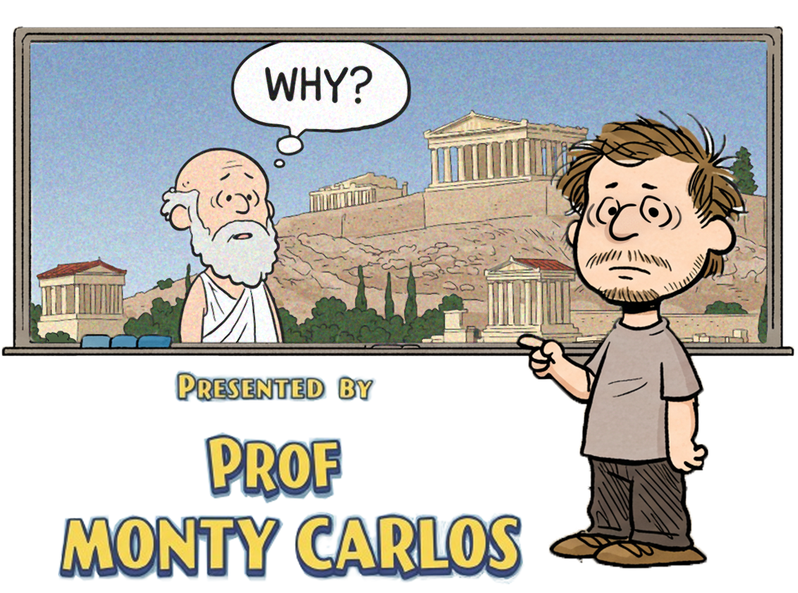
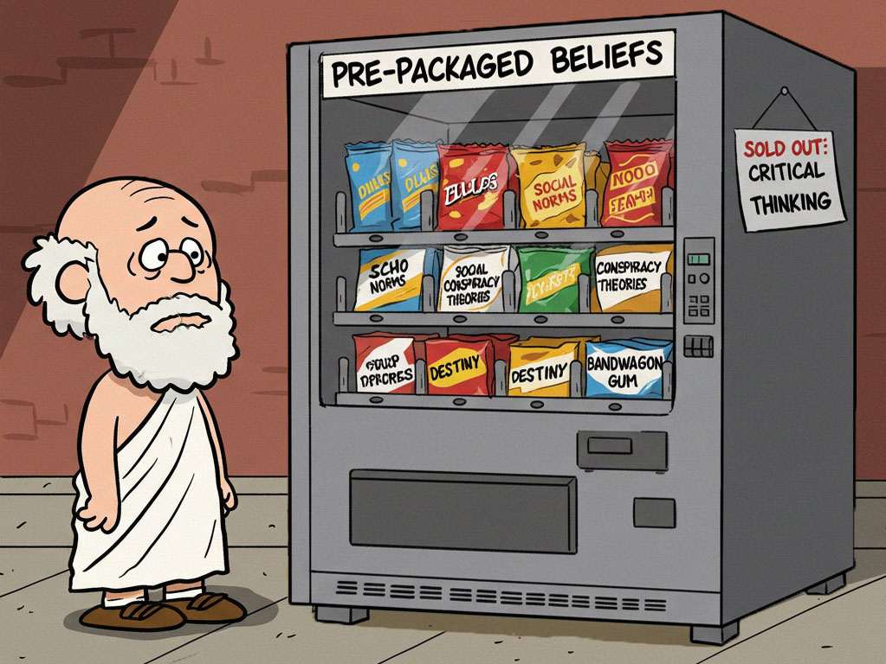
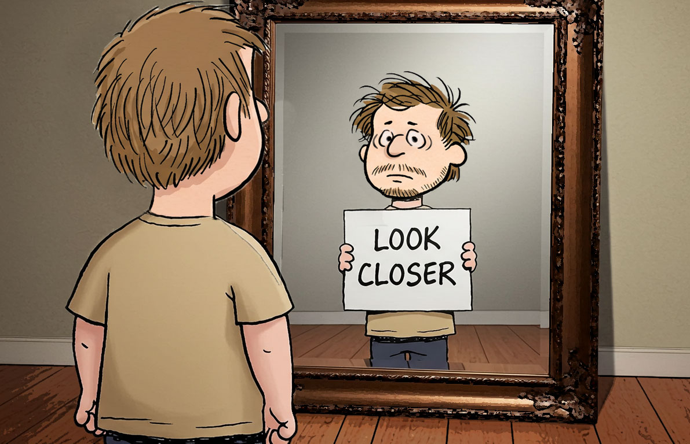

Socrates was sentenced to death… for asking too many questions.




Because if you don’t think for yourself, someone else will do it for you.


He exposed contradictions in people’s thinking.


And that’s how you start examining your life.


His critical thinking was so threatening that the powerful sentenced him to death by poison.

The cool thing about questioning everything is you start seeing the world differently.
Like, why do we park on driveways and drive on parkways?
Why do we call them apartments when they're all stuck together?

Select all that apply

Now it's your turn: What belief have you never questioned... but should?
